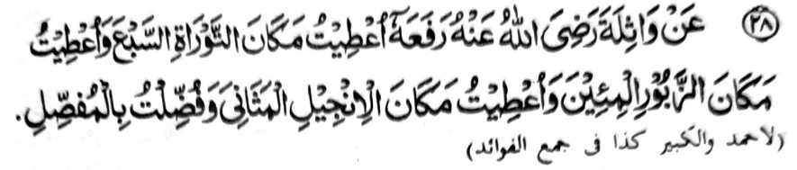

Miyakathitayan ko Wathilah (Radhiallaho ‘Anho) a pitharo iyan a pitharo o Rasulollah (Sallallaho ‘Alaihi wa Sallam), “Inibegay raken a sambi o Taurat so As-Sab’a Tuwalin, go inibegay raken a sambi o Zabor so Al-Mi’in, go inibegay raken a sambi o Injeel so Al-Mathani, go so Al-Mufassal a milelebi aken.”
So kiyamba-a-ba-ad na si-i kiyatokawan ko lomalangkap a osayan, ogaid na aden a kiyapaka-mbidabida o pamikiran o ba so isa a soorah na ped ko As-Sab’a Tuwalin o di na si-i ped ko Al-Mi’in. Lagid oto mambo so ped a soorah o anda ma-aped: si-i ko Al-Mathani o si-i ko Al-Mufassal. Ogaid na giyangka-iya a kiyapaka-mbidabida o pamikiran na da niyan marambit so ma-ana ago antap angka-iya Hadith.
Giyangka-iya a Hadith na piyakisabotan niyan a so Qur’an na madadalemon so timbang o langon o manga ala a Kitab a pho-on sa Langit a initoron ko miyanga-oona, sa lawan ro-o, na madadalemon so Al-Mufassal a mibibinta iyan, a so lagid iyan na da mato-on ko miyanga-oona a manga kitab.